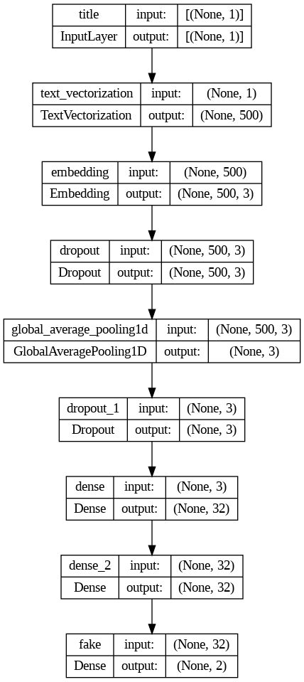
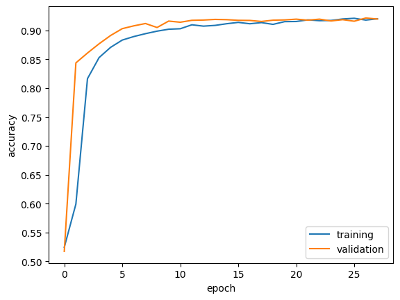
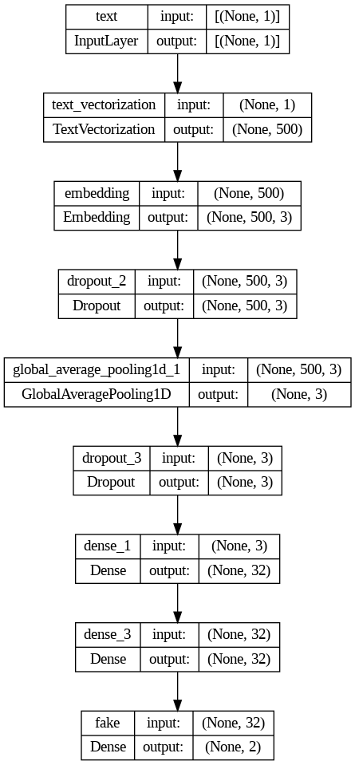
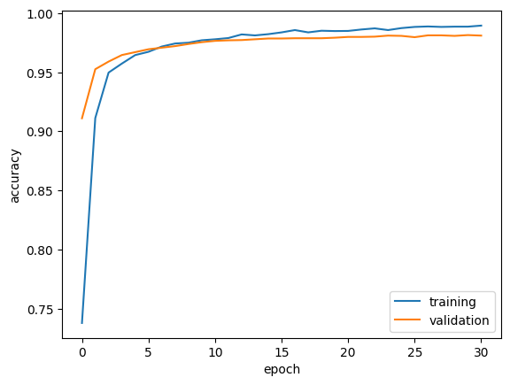
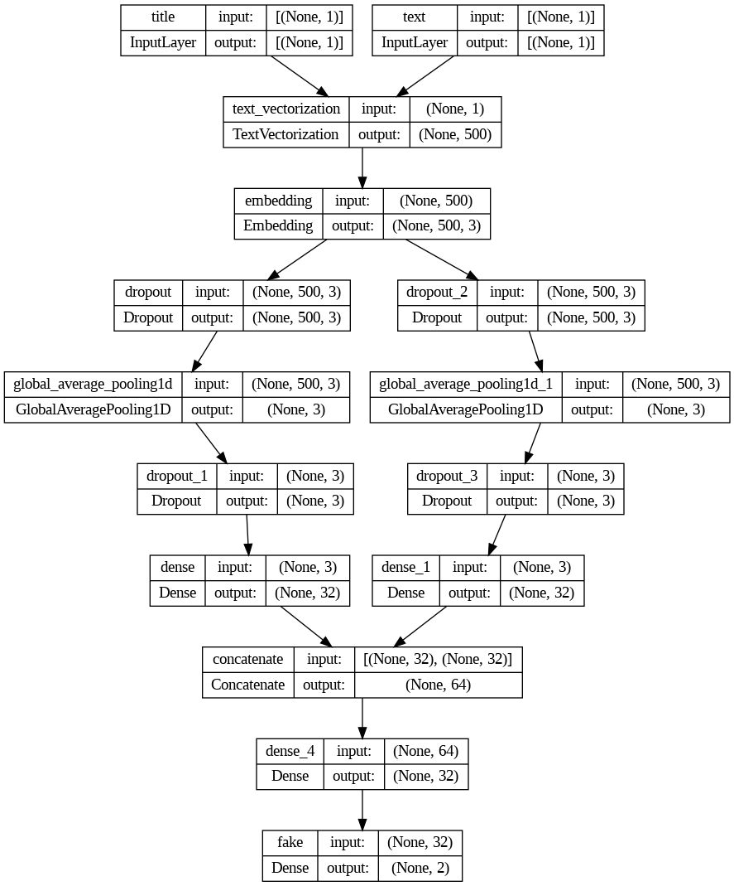
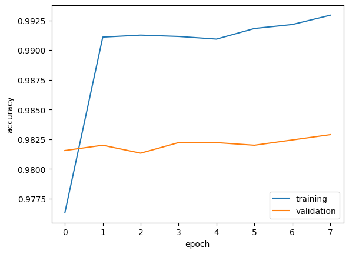

import os
import re
import string
import pandas as pd
import tensorflow as tf
from keras import utils
import matplotlib.pyplot as plt
import numpy as np
from sklearn.feature_extraction import text
os.environ["KERAS_BACKEND"] = "tensorflow"Introduction
Today we will be be creating a fake news classifier utilizing Keras. We will assess several different models, evaluating each to determine which method yields the highest accuracy rate.
Imports
We will start with some of the imports we will need for this project, such as pandas, tensorflow, numpy, etc. One import that we do not normally see is text from sklearn.feature_extraction. This library will help us to remove stop words from our articles. Note that we have set the backend of keras to be tensorflow using the os library. This tries to ensure that keras runs as fast as we would like it to.
import keras
from keras import layers, lossesNow that we have set the backend of keras to be tensorflow, we can import kers itself, as well as layers and losses from keras that will be used within our models.
Data Configuration
# setting train_url to our dataset
train_url = "https://github.com/PhilChodrow/PIC16b/blob/master/datasets/fake_news_train.csv?raw=true"
# reading in dataset
train_data = pd.read_csv(train_url)Here we are reading in data from a github site. We use the read_csv function from pandas to do so, passing in the url for the site with the data.
def make_dataset(df):
'''
Function takes in a dataframe, formats the information within, and returns a tf.data.Dataframe
'''
# make text lowercase
df['title'] = df['title'].apply(lambda x: x.lower())
df['text'] = df['text'].apply(lambda x: x.lower())
# create list with stopwords
stop = text.ENGLISH_STOP_WORDS
# remove stopwords from title and text columns
df['title'] = df['title'].apply(lambda x:' '.join([word for word in x.split() if word not in (stop)]))
df['text'] = df['text'].apply(lambda x:' '.join([word for word in x.split() if word not in (stop)]))
# construct tf.data.Dataset with inputs of form (title, text) and output being fake column
retDataset = tf.data.Dataset.from_tensor_slices(({'title': df[['title']], 'text':df[['text']]}, {'fake': df[['fake']]} ))
# batch dataset before returning
retDataset = retDataset.batch(100)
return retDatasetThis function will take in a pandas dataframe, do some data processing, and return a tf.data.Dataset. For our data processing, the first thing we want to do is make all of our text and titles lowercase. We accomplish this by utilizing the lower function, however we need to apply this to the entire ‘text’ and ‘title’ columns within our dataframe. By calling the apply attribute of our columns, we can then use a lambda function that takes each input and calls the lower function, effectively making all of the article titles and text lower case. The next step is to remove all stopwords from our title and text columns. We first want to get a list of all the words we wish to remove, which can be accomplished by using the text library we imported. This library has an attribute ‘ENGLISH_STOP_WORDS’, which returns a list of, as you can probably guess, all english stop words. We set this equal to stop, to allow for easier use throughout the rest of the function. We will use a similar method for removing stopwords as we did for lowering all of our text and titles. Again, we call the apply function for both columns, with the only difference this time being within the lambda function. The stop words are removed within this lambda function by first joining all words in the lambda input into a single string via the join function. Note that the words will be separated by spaces due to the space placed in single quotation marks before join is called. The second part of the lambda function creates a list of words from the string where words are only included if they are not in our list stop, effectively removing all stopwords. Finally, we are ready to create the dataset that we will be returning. We create such a dataset using the tf.data.Dataset.from_tensor_slices command, passing in both our inputs and our outputs. For our dataset, we want inputs of both title and text while having a single output of the fake column. To accomplish this, our first argument enclosed in curly braces, which will be taken in as our inputs, includes both the ‘title’ and ‘text’ columns from our dataframe, while the second set of curly braces, our output, only contains the ‘fake’ column from our dataframe. Our dataframe has been created, but for training purposes it is useful to batch it so that we do not train over the entire set each epoch. I chose 100 for the batch amount, and after batching we can simply return our newly created dataframe, concluding the implementation of this function.
# creating our primary dataset from our dataframe
primaryDataset = make_dataset(train_data)After doing all the work initializing the previous function, we can now utilize it to create our dataset by passing in the dataframe we read in earlier to the function, and initializing it as our primaryDataset.
# assigning training and validation size
val_size = int(0.2*len(primaryDataset))
# assigning portions of datset to train and val
train = primaryDataset.skip(val_size)
val = primaryDataset.take(val_size)We would like a validation dataset for training purposes, so we will set aside a portion of our dataset as a validation set. In this case, we chose to set aside twenty percent of our dataset for validation. In order to implement this, we first have to set the desired size for our validation. As we want twenty percent of our datset, we set val_size to 0.2 times the length of our datset. Note that we cast it as an int, allowing us to use it in the following lines. We now set our training dataset to everything in our original dataset except for our validation section, accomplished by using the skip attribute, letting us hop over the size of the validation dataset while grabbing everything else. We then intitialize our validation datset by using the take attribute of our original dataset, while using the size we specified earlier as an argument. We have now concluded construction of the datasets that we will train our models on.
# checking the size of our training and validation datasets
print("Size of training dataset:", len(train))
print("Size of validation dataset:", len(val))Size of training dataset: 180
Size of validation dataset: 45Here we are simply checking the sizes of our training and validation datasets. This is useful for making sure that our previous code block worked properly. While you may be concerned that there is only a combined size of 225, we must remember that we batched the data by 100 when we created the dataset, meaning that there is much more than just 225 articles in the combined sets.
# defining variables for calculating baseline model
totSum = 0
elNum = 0
# iterating through train to check all labels
for article, fake in train:
# adding labels to totSum and length of each array to elNum
addVal = np.sum(fake['fake'].numpy().flatten())
elNum = elNum + len(fake['fake'].numpy().flatten())
totSum = totSum + addVal
# displaying results
print("Number of true articles is:" , totSum)
print("Number of total articles is:", elNum)
print("Baseline estimate is: ", max(totSum/elNum,((elNum-totSum)/elNum)))Number of true articles is: 9412
Number of total articles is: 17949
Baseline estimate is: 0.5243746169703047It is useful to know the accuracy that a baseline model would achieve on a given datset. Recall that a baseline model simply guesses the most common label each time. To find the accuracy, we simply need to find whether the percentage of true or false articles is higher. We start by initializing two variables, totSum and elNum, which will be used to count the number of true articles and the total number of articles respectively. We will now iterate through our train dataset, calling the articles and their fake values. For each value, we want to add the number of true articles to our variable totSum. However, as true articles have a ‘fake’ value of one, and false articles have a ‘fake’ value of zero, we can simply add up all of the ‘fake’ values and we will be left with the total number of true articles. To accomplish this, for each ‘fake’ in train, we call the ‘fake’ attribue and call the numpy() attribute of it. This yields the ones and zeros referring to falsehood of each article. We must remember that we batched our data, making it appear in chunks as opposing to each article individually, hence we call the ‘flatten’ attribute to flatten the array before using the sum function from numpy to get the total of all the ‘false’ values from that array, setting that equal to the value we will add to our total sum of true articles. For each ‘fake’, we also call the length of the flattened array and add it to elNum in order to get an idea of how many total articles are contained in our dataset. Finally, within the for loop we add our value addVal to totSum to increment it by the number of true articles in the most recent batch, and then we are ready to display our data. We display the number of true articles by printing totSum, as well as the number of total articles by printing out elNum. Finally, to calculate our baseline accuracy, we use the max function to find whether there are more true or false articles, and then divide by the total number of articles, yielding an accuracy of around 52.437%. Note that we find the number of false articles by subtracting the number of true articles from the total number of articles as there are only two categories.
Model Layer Preparation
# only top 2000 words will be tracked
size_vocabulary = 2000
# converts input to lowercase and strips it of all punctuation
def standardization(input_data):
lowercase = tf.strings.lower(input_data)
no_punctuation = tf.strings.regex_replace(lowercase,
'[%s]' % re.escape(string.punctuation),'')
return no_punctuation
title_vectorize_layer = tf.keras.layers.TextVectorization(
standardize=standardization,
max_tokens=size_vocabulary, # only consider this many words
output_mode='int',
output_sequence_length=500)
title_vectorize_layer.adapt(train.map(lambda x, y: x["title"]))
title_vectorize_layer.adapt(train.map(lambda x, y: x["text"]))We start our model preparation by creating our text vectorization layer. The first thing we do is set the size of our vocabulary we wish to consider, in this case we chose 2000. Therefore, only the 2000 most popular words will be considered. Next, we create a standardization function which takes in an input, converts it all to lowercase, and removes all punctuation before returning the modified input. Finally, we create our title_vectorize_layer that we will be using within our model. We set it as an instance of a TextVectorization from keras and pass in a few arguments. As the method of standardization, we pass in our standardization function we just created, as well as setting max_tokens equal to the size of our vocabulary we defined at the top of this block of code. Finally, we set the layer to ouput_mode an integer while also setting the output_sequence_length equal to 500, meaning the returned vector will be of size 500. Finally, we adapt the layer to our headlines, allowing for the layer to learn what words are common. We accomplish this by calling the ‘adapt’ attribute of the function, and map it to to the ‘title’ and ‘text’ columns of our train dataset. Our text vectorization layer is now prepared for use.
# creating embedding layer to be used in multiple models
embedLayer = layers.Embedding(size_vocabulary, 3)Here we are creating an embedding layer that we will use throughout multiple models. We give it a name so that it is easier to reuse.
# inputs
titleInput = keras.Input(shape = (1,), name = 'title', dtype = 'string')
textInput = keras.Input(shape = (1,), name = 'text', dtype = 'string')Here we are defining the different kinds of inputs we will pass into our models using the ‘Input’ attribute from keras. As our inputs are of the same shape, we can set the shape for both titleInput and textInput to be (1,). We give them each their respective names, as well as specifying they are both of the string datatype, and our inputs are now ready to be introduced into our model.
# layers for processing the titles
titleFeatures = title_vectorize_layer(titleInput)
titleFeatures = embedLayer(titleFeatures)
titleFeatures = layers.Dropout(0.2)(titleFeatures)
titleFeatures = layers.GlobalAveragePooling1D()(titleFeatures)
titleFeatures = layers.Dropout(0.2)(titleFeatures)
titleFeatures = layers.Dense(32, activation='relu')(titleFeatures)Here we are beginning to define our model by specifying the layers that should be used to process our titles input. Note that we begin with the vectorization layer we defined earlier, followed by our embedding layer ‘embedLayer’ we defined previously. Note that for the first layer we pass in titleInput, but for each following layer we simply pass in the output of the previous layer. We are utilizing a variety of GlobalAveragePooling1D layers, Dense layers with ‘relu’ activation to introduce the property of nonlinearity, and Dropout layers to avoid overfitting.
# layers for processing the text
textFeatures = title_vectorize_layer(textInput)
textFeatures = embedLayer(textFeatures)
textFeatures = layers.Dropout(0.2)(textFeatures)
textFeatures = layers.GlobalAveragePooling1D()(textFeatures)
textFeatures = layers.Dropout(0.2)(textFeatures)
textFeatures = layers.Dense(32, activation = 'relu')(textFeatures)In this block we are doing the same thing as above, however for our textInputs. Note that the layers are the same, however we use our named layers we previously defined as the first two layers. These layers will be the exact same as the ones in the title process, while the other layers will be different instances of layers with the same parameters.
def trainingVis(history):
# display training history visualization
plt.plot(history.history["accuracy"], label = "training")
plt.plot(history.history["val_accuracy"], label = "validation")
plt.gca().set(xlabel = "epoch", ylabel = "accuracy")
plt.legend()
returnHere we define a visualization function for the training history of each model. It takes in the history of a trained model, and displays a graph plotting training and validation accuracy across each epoch. We will see its use later after we train a model.
Title Model
# adding dense layer as well as specifying output
titleMain = layers.Dense(32, activation = 'relu')(titleFeatures)
titleOutput = layers.Dense(2, name = 'fake')(titleMain)Here we are adding an extra dense layer to be applied after the processing we previously defined for our title input. Additionally, we specify our output layer, a dense layer with two neurons. We specify the name ‘fake’ so that the layer knows which layer it is trying to predict
# creating model
titleModel = keras.Model(inputs = titleInput, outputs = titleOutput)We can now create our model, which we call titleModel, by specifying the inputs to just be titleInput, and specifying the output to be the titleOutput we defined in the previous block which contains all of our layer modificatins.
#providing visualization for model
utils.plot_model(titleModel, "output_filename.png",
show_shapes=True,
show_layer_names=True)
Here we are able to provide a nice visualization of what our model is doing layer by layer. This is possible by use of the utils library. We call the plot_model function from this library and pass in our model as an argument to yield the plot above. We can see that each layer displays their name, input shape, and output shape.
# compiling titleModel
titleModel.compile(optimizer = "adam",
loss = losses.SparseCategoricalCrossentropy(from_logits=True),
metrics=['accuracy']
)Here we compile our model to prepare for training. We are using the optimizer ‘adam’ as well as SparseCategoricalCrossentropy for our loss. We make sure to include ‘accuracy’ in our metrics so that we can view training history after our model has been trained.
callback = keras.callbacks.EarlyStopping(monitor='val_loss', patience = 5)Here we are creating an instance of the EarlyStopping callback. This will help us to prevent overfitting as it will stop the training process should certain criteria be met. We tell the callback to monitor the validation set loss by setting monitor equal to ‘val_loss’. This means that if ‘val_loss’ plateus or stops improving, the training will stop. We have also set patience to five, meaning that the validation will have to stop improving for five epochs before the callback will end the training. Now that we have defined our callback, we are ready to begin training our model.
# training titleModel
titleHistory = titleModel.fit(train,
validation_data = val,
epochs = 50,
callbacks=[callback],
verbose = True)Epoch 1/50
180/180 [==============================] - 15s 58ms/step - loss: 0.6917 - accuracy: 0.5244 - val_loss: 0.6908 - val_accuracy: 0.5173
Epoch 2/50
180/180 [==============================] - 2s 8ms/step - loss: 0.6711 - accuracy: 0.5992 - val_loss: 0.6111 - val_accuracy: 0.8438
Epoch 3/50
180/180 [==============================] - 1s 5ms/step - loss: 0.4692 - accuracy: 0.8165 - val_loss: 0.3493 - val_accuracy: 0.8609
Epoch 4/50
180/180 [==============================] - 1s 5ms/step - loss: 0.3423 - accuracy: 0.8530 - val_loss: 0.2974 - val_accuracy: 0.8769
Epoch 5/50
180/180 [==============================] - 1s 5ms/step - loss: 0.3080 - accuracy: 0.8708 - val_loss: 0.2650 - val_accuracy: 0.8913
Epoch 6/50
180/180 [==============================] - 1s 5ms/step - loss: 0.2763 - accuracy: 0.8833 - val_loss: 0.2449 - val_accuracy: 0.9031
Epoch 7/50
180/180 [==============================] - 1s 6ms/step - loss: 0.2598 - accuracy: 0.8895 - val_loss: 0.2343 - val_accuracy: 0.9080
Epoch 8/50
180/180 [==============================] - 1s 6ms/step - loss: 0.2490 - accuracy: 0.8944 - val_loss: 0.2223 - val_accuracy: 0.9120
Epoch 9/50
180/180 [==============================] - 1s 5ms/step - loss: 0.2408 - accuracy: 0.8988 - val_loss: 0.2215 - val_accuracy: 0.9051
Epoch 10/50
180/180 [==============================] - 1s 5ms/step - loss: 0.2334 - accuracy: 0.9021 - val_loss: 0.2148 - val_accuracy: 0.9162
Epoch 11/50
180/180 [==============================] - 1s 7ms/step - loss: 0.2304 - accuracy: 0.9029 - val_loss: 0.2095 - val_accuracy: 0.9142
Epoch 12/50
180/180 [==============================] - 1s 8ms/step - loss: 0.2192 - accuracy: 0.9098 - val_loss: 0.2092 - val_accuracy: 0.9176
Epoch 13/50
180/180 [==============================] - 1s 5ms/step - loss: 0.2197 - accuracy: 0.9075 - val_loss: 0.2052 - val_accuracy: 0.9180
Epoch 14/50
180/180 [==============================] - 1s 6ms/step - loss: 0.2174 - accuracy: 0.9087 - val_loss: 0.2036 - val_accuracy: 0.9191
Epoch 15/50
180/180 [==============================] - 1s 5ms/step - loss: 0.2133 - accuracy: 0.9116 - val_loss: 0.2029 - val_accuracy: 0.9187
Epoch 16/50
180/180 [==============================] - 2s 8ms/step - loss: 0.2076 - accuracy: 0.9140 - val_loss: 0.2017 - val_accuracy: 0.9176
Epoch 17/50
180/180 [==============================] - 1s 7ms/step - loss: 0.2080 - accuracy: 0.9116 - val_loss: 0.2005 - val_accuracy: 0.9173
Epoch 18/50
180/180 [==============================] - 1s 6ms/step - loss: 0.2072 - accuracy: 0.9136 - val_loss: 0.2105 - val_accuracy: 0.9156
Epoch 19/50
180/180 [==============================] - 1s 8ms/step - loss: 0.2125 - accuracy: 0.9105 - val_loss: 0.2008 - val_accuracy: 0.9178
Epoch 20/50
180/180 [==============================] - 1s 6ms/step - loss: 0.2018 - accuracy: 0.9153 - val_loss: 0.1997 - val_accuracy: 0.9182
Epoch 21/50
180/180 [==============================] - 1s 5ms/step - loss: 0.2034 - accuracy: 0.9155 - val_loss: 0.1986 - val_accuracy: 0.9196
Epoch 22/50
180/180 [==============================] - 1s 5ms/step - loss: 0.1974 - accuracy: 0.9183 - val_loss: 0.1992 - val_accuracy: 0.9178
Epoch 23/50
180/180 [==============================] - 1s 5ms/step - loss: 0.2028 - accuracy: 0.9169 - val_loss: 0.1979 - val_accuracy: 0.9196
Epoch 24/50
180/180 [==============================] - 1s 5ms/step - loss: 0.1999 - accuracy: 0.9173 - val_loss: 0.2003 - val_accuracy: 0.9164
Epoch 25/50
180/180 [==============================] - 1s 5ms/step - loss: 0.1958 - accuracy: 0.9199 - val_loss: 0.1989 - val_accuracy: 0.9187
Epoch 26/50
180/180 [==============================] - 1s 5ms/step - loss: 0.1969 - accuracy: 0.9211 - val_loss: 0.2018 - val_accuracy: 0.9160
Epoch 27/50
180/180 [==============================] - 1s 6ms/step - loss: 0.1980 - accuracy: 0.9179 - val_loss: 0.1981 - val_accuracy: 0.9216
Epoch 28/50
180/180 [==============================] - 1s 6ms/step - loss: 0.1953 - accuracy: 0.9202 - val_loss: 0.1983 - val_accuracy: 0.9198/usr/local/lib/python3.10/dist-packages/keras/src/engine/functional.py:642: UserWarning: Input dict contained keys ['text'] which did not match any model input. They will be ignored by the model.
inputs = self._flatten_to_reference_inputs(inputs)We can finally train our model! We do so by using the ‘fit’ attribute of our model, passing in a few important arguments. We pass in the train dataset to tell the function what to train the model on, as well as giving the val dataset to be used as the validation_data. Additionally, we set the number of epochs to be fifty, which may seem large, however we also passed in the callback we just defined which will stop the training once it deems it necessary. As we can see from the output above, our model was relatively successful, settling at validation accuracies of between 94% and 95%. We will viisualize below to make it easier to interpret the results.
# displaying training history
trainingVis(titleHistory)
Utilizing the visualization function trainingVis we defined earlier, we are able to plot our training and validation accuracy against the epochs. As we can see, there was a drastic increase in accuracy accross the first couple epochs, before the training and validation accuracies settled at above 90%, approximately 94% to be precise. These are pretty good results, however we only used titles as input. We can now use a model using article text as an input to check if we are able to obtain better results.
Text Model
# adding dense layer as well as specifying output
textMain = layers.Dense(32, activation = 'relu')(textFeatures)
textOutput = layers.Dense(2, name = 'fake')(textMain)Here we are adding an additional dense layer after the layers implemented by textFeatures, as well as defining our output layer, specifying the name ‘fake’ so that the layer knows what to predict.
# creating model
textModel = keras.Model(inputs = textInput, outputs = textOutput)Here we can define our model as we did for the titleModel, however this time we pass in only the textInput for our inputs and define our output to be the textOutput we defined above.
# providing visualization for textModel
utils.plot_model(textModel, "output_filename.png",
show_shapes=True,
show_layer_names=True)
Here we have a plot displaying the process an input goes through within our model. Note how it is nearly identical to our previous model. This is due to the fact that the layers used in each model are different instances of layers passed the same parametrs, with the text vectorization layer and the embedding layer being the exact same layers.
# compiling textModel
textModel.compile(optimizer = "adam",
loss = losses.SparseCategoricalCrossentropy(from_logits=True),
metrics=['accuracy']
)We can now compile our textModel, again using the optimizer ‘adam’ as well as using SparseCategoricalCrossentropy as our loss function. Note that it is critical for visualization of training data that we include ‘accuracy’ within our metrics argument.
textHistory = textModel.fit(train,
validation_data = val,
epochs = 50,
callbacks=[callback],
verbose = True)Epoch 1/50
180/180 [==============================] - 15s 75ms/step - loss: 0.5455 - accuracy: 0.7378 - val_loss: 0.2952 - val_accuracy: 0.9111
Epoch 2/50
180/180 [==============================] - 2s 11ms/step - loss: 0.2349 - accuracy: 0.9113 - val_loss: 0.1672 - val_accuracy: 0.9527
Epoch 3/50
180/180 [==============================] - 2s 11ms/step - loss: 0.1531 - accuracy: 0.9498 - val_loss: 0.1413 - val_accuracy: 0.9591
Epoch 4/50
180/180 [==============================] - 2s 11ms/step - loss: 0.1285 - accuracy: 0.9574 - val_loss: 0.1269 - val_accuracy: 0.9647
Epoch 5/50
180/180 [==============================] - 3s 15ms/step - loss: 0.1100 - accuracy: 0.9646 - val_loss: 0.1183 - val_accuracy: 0.9671
Epoch 6/50
180/180 [==============================] - 2s 11ms/step - loss: 0.1012 - accuracy: 0.9674 - val_loss: 0.1117 - val_accuracy: 0.9696
Epoch 7/50
180/180 [==============================] - 2s 11ms/step - loss: 0.0918 - accuracy: 0.9719 - val_loss: 0.1057 - val_accuracy: 0.9709
Epoch 8/50
180/180 [==============================] - 2s 11ms/step - loss: 0.0834 - accuracy: 0.9744 - val_loss: 0.1020 - val_accuracy: 0.9722
Epoch 9/50
180/180 [==============================] - 2s 11ms/step - loss: 0.0799 - accuracy: 0.9751 - val_loss: 0.0972 - val_accuracy: 0.9740
Epoch 10/50
180/180 [==============================] - 2s 11ms/step - loss: 0.0754 - accuracy: 0.9772 - val_loss: 0.0962 - val_accuracy: 0.9756
Epoch 11/50
180/180 [==============================] - 2s 13ms/step - loss: 0.0707 - accuracy: 0.9780 - val_loss: 0.0929 - val_accuracy: 0.9767
Epoch 12/50
180/180 [==============================] - 2s 11ms/step - loss: 0.0675 - accuracy: 0.9791 - val_loss: 0.0926 - val_accuracy: 0.9771
Epoch 13/50
180/180 [==============================] - 2s 11ms/step - loss: 0.0596 - accuracy: 0.9821 - val_loss: 0.0902 - val_accuracy: 0.9773
Epoch 14/50
180/180 [==============================] - 2s 11ms/step - loss: 0.0600 - accuracy: 0.9813 - val_loss: 0.0913 - val_accuracy: 0.9780
Epoch 15/50
180/180 [==============================] - 2s 11ms/step - loss: 0.0565 - accuracy: 0.9823 - val_loss: 0.0863 - val_accuracy: 0.9787
Epoch 16/50
180/180 [==============================] - 3s 15ms/step - loss: 0.0540 - accuracy: 0.9838 - val_loss: 0.0842 - val_accuracy: 0.9787
Epoch 17/50
180/180 [==============================] - 2s 11ms/step - loss: 0.0511 - accuracy: 0.9858 - val_loss: 0.0872 - val_accuracy: 0.9789
Epoch 18/50
180/180 [==============================] - 2s 11ms/step - loss: 0.0508 - accuracy: 0.9838 - val_loss: 0.0819 - val_accuracy: 0.9789
Epoch 19/50
180/180 [==============================] - 2s 11ms/step - loss: 0.0480 - accuracy: 0.9852 - val_loss: 0.0807 - val_accuracy: 0.9789
Epoch 20/50
180/180 [==============================] - 2s 11ms/step - loss: 0.0477 - accuracy: 0.9850 - val_loss: 0.0792 - val_accuracy: 0.9793
Epoch 21/50
180/180 [==============================] - 2s 13ms/step - loss: 0.0458 - accuracy: 0.9851 - val_loss: 0.0831 - val_accuracy: 0.9800
Epoch 22/50
180/180 [==============================] - 2s 13ms/step - loss: 0.0423 - accuracy: 0.9863 - val_loss: 0.0854 - val_accuracy: 0.9800
Epoch 23/50
180/180 [==============================] - 2s 11ms/step - loss: 0.0412 - accuracy: 0.9872 - val_loss: 0.0892 - val_accuracy: 0.9802
Epoch 24/50
180/180 [==============================] - 2s 13ms/step - loss: 0.0410 - accuracy: 0.9858 - val_loss: 0.0787 - val_accuracy: 0.9811
Epoch 25/50
180/180 [==============================] - 2s 11ms/step - loss: 0.0398 - accuracy: 0.9875 - val_loss: 0.0827 - val_accuracy: 0.9809
Epoch 26/50
180/180 [==============================] - 2s 11ms/step - loss: 0.0372 - accuracy: 0.9885 - val_loss: 0.0773 - val_accuracy: 0.9798
Epoch 27/50
180/180 [==============================] - 3s 15ms/step - loss: 0.0362 - accuracy: 0.9889 - val_loss: 0.0810 - val_accuracy: 0.9813
Epoch 28/50
180/180 [==============================] - 2s 11ms/step - loss: 0.0359 - accuracy: 0.9885 - val_loss: 0.0808 - val_accuracy: 0.9813
Epoch 29/50
180/180 [==============================] - 2s 11ms/step - loss: 0.0355 - accuracy: 0.9887 - val_loss: 0.0793 - val_accuracy: 0.9809
Epoch 30/50
180/180 [==============================] - 2s 11ms/step - loss: 0.0340 - accuracy: 0.9887 - val_loss: 0.0786 - val_accuracy: 0.9816
Epoch 31/50
180/180 [==============================] - 3s 15ms/step - loss: 0.0328 - accuracy: 0.9896 - val_loss: 0.0808 - val_accuracy: 0.9811/usr/local/lib/python3.10/dist-packages/keras/src/engine/functional.py:642: UserWarning: Input dict contained keys ['title'] which did not match any model input. They will be ignored by the model.
inputs = self._flatten_to_reference_inputs(inputs)When training this function, we pass in all the same arguments as we did when we passed in our titleModel training. We will save it to a different variable, textHistory, to display later. We can see that this model performed slightly bette, as the training and validation accuracies settled at around 97%. We can take a closer look in the following visualization.
# display training history for textModel
trainingVis(textHistory)
We have a similar graph to the titleModel training history, however note that in this graph the validation accuracy started much higher. While both graphs settled in at above 90% accuracy for both validation and training accuracy, the textModel achieved accuracies of 97%, representing roughly a 3% increase from the previous model. In our next model we will test using both article title and article text as inputs to see if that can even further increase our accuracy.
Model Using Title and Text
# concatenating title and text features
finMain = layers.concatenate([titleFeatures, textFeatures], axis = 1)While somewhat unassuming, this is one of the most critical lines in this model. We are concatenating the output of the pipelines titleFeatures and textFeatures. This will allow these inputs to work in unison in our model.
finMain = layers.Dense(32, activation = 'relu')(finMain)
finOutput = layers.Dense(2, name = 'fake')(finMain)We are again adding two dense layers, with one used for the output, as we did in the previous models. Note that we are now setting the first layer equal to finMain which we defined with the concatenated layer that we defined above.
# creating model
finModel = keras.Model(inputs = [titleInput, textInput], outputs = finOutput)Here we are creating our model, this time passing in a list with titleInput and textInput as our list of inputs. Our output is finOutput which we defined in the previous block of code.
# displaying visualization for finModel
utils.plot_model(finModel, "output_filename.png",
show_shapes=True,
show_layer_names=True)
The visualization of this model appears more complex than the previous ones. We can see the two inputs that are received from the model are at first joined in passing through the text vectorization layer followed by the embedding layer. This is due to the fact that these are the exact saem layers as we defined them prior to the creation of the pipelines and passed them in by name. After these two layers, we see the a split into two tracks, representing the different paths taken by the two inputs. However if we look closely, despite the names being different, the type of layers, as well as their inputs and outputs are identical. The layers are concatenated again before we reach our final dense layers, which are identical to the previous models.
# compiling finModel
finModel.compile(optimizer = "adam",
loss = losses.SparseCategoricalCrossentropy(from_logits=True),
metrics=['accuracy']
)The comilation of this model remains identical to the previous models despite having multiple inputs. The optimizer and loss functions remain the same. We can now test the model to check for an improvement in our accuracy scores.
finHistory = finModel.fit(train,
validation_data = val,
epochs = 50,
callbacks=[callback],
verbose = True)Epoch 1/50
180/180 [==============================] - 13s 60ms/step - loss: 0.2474 - accuracy: 0.9763 - val_loss: 0.0837 - val_accuracy: 0.9816
Epoch 2/50
180/180 [==============================] - 3s 17ms/step - loss: 0.0565 - accuracy: 0.9911 - val_loss: 0.0651 - val_accuracy: 0.9820
Epoch 3/50
180/180 [==============================] - 2s 12ms/step - loss: 0.0399 - accuracy: 0.9913 - val_loss: 0.0632 - val_accuracy: 0.9813
Epoch 4/50
180/180 [==============================] - 2s 12ms/step - loss: 0.0365 - accuracy: 0.9911 - val_loss: 0.0641 - val_accuracy: 0.9822
Epoch 5/50
180/180 [==============================] - 2s 12ms/step - loss: 0.0322 - accuracy: 0.9909 - val_loss: 0.0643 - val_accuracy: 0.9822
Epoch 6/50
180/180 [==============================] - 2s 12ms/step - loss: 0.0312 - accuracy: 0.9918 - val_loss: 0.0660 - val_accuracy: 0.9820
Epoch 7/50
180/180 [==============================] - 3s 16ms/step - loss: 0.0290 - accuracy: 0.9921 - val_loss: 0.0640 - val_accuracy: 0.9824
Epoch 8/50
180/180 [==============================] - 2s 12ms/step - loss: 0.0260 - accuracy: 0.9929 - val_loss: 0.0650 - val_accuracy: 0.9829Using the same training call, we observe another improvement in accuracy. Our validation accuracy settles at around 98%, while the training accuracy settles even higher, at around 99%. This is yet another improvement in accuracy, which we can take another look at in our visualization below.
# display training history for finModel
trainingVis(finHistory)
We again see a rapid increase in training accuracy, however if we look carefully, it also starts much higher, at just under 95%. While it appears that this training resulted in much more variable results due to the apparent ups and downs in our accuracies, we must take into account the fact that this plot is much more zoomed in, just showing accuracies starting at 94%. We can confidently state that this was our most successful model with an increase of 1% accuracy over our previous model using just the article text.
Based on our results, it seems evident that algorithms should use both title and text when trying to detect fake news. While using the text gave us very good results at approximately 97% validation accuracy, including the title increased our accuracy by about 1%, which is not a massive improvement, but nevertheless is worth it.
Evaluating Model on Test Set
# reading in test dataset
test_url = "https://github.com/PhilChodrow/PIC16b/blob/master/datasets/fake_news_test.csv?raw=true"
testDf = pd.read_csv(test_url)Here we are reading in a new dataframe that we will use to test our highest performing model against.
# creating a Dataset from testDf
test = make_dataset(testDf)We are converting the test dataframe we just read in into a dastaset using the make_dataset function we created earlier.
# testing most accurate model on test set
finModel.evaluate(test)225/225 [==============================] - 3s 11ms/step - loss: 0.0595 - accuracy: 0.9852[0.0595041960477829, 0.9852108955383301]Using the evaluation function, we test our highest performing model, the one utilizing multiple inputs, on our new dataset test. As we can see, we achieved very good accuracy at 98.2%. This means that in theory if we were to utilize our model as a fake news detector we would be right approximately 98% of the time.
Embedding Visualization
weights = finModel.get_layer('embedding').get_weights()[0] # get the weights from the embedding layer
vocab = title_vectorize_layer.get_vocabulary() # get the vocabulary from our data prep for later
from sklearn.decomposition import PCA
pca = PCA(n_components=2)
weights = pca.fit_transform(weights)
embedding_df = pd.DataFrame({
'word' : vocab,
'x0' : weights[:,0],
'x1' : weights[:,1]
})Here we are setting up a visualization of our embedding layer. We use the PCA library to reduce the dimensions to a visualizable number, and we can see where these variables are used in the following block.
#use iframe
import plotly.io as pio
iframe_renderer = pio.renderers['iframe_connected']
iframe_renderer.html_directory='notebooks/iframe_figures'
pio.renderers.default = "iframe_connected"import plotly.express as px
fig = px.scatter(embedding_df,
x = "x0",
y = "x1",
size = list(np.ones(len(embedding_df))),
size_max = 5,
hover_name = "word")
fig.show()Here we create a visualization for the embedding layer using the weights and variables we found in the previous code block. Certain locations on the plot, as well as proximity to other words can tell us a significant amount about the given word. For example, in the bottom left-hand side, approximately at coordinates roughly (-3.5,0), we see two points that are very close together. These words are ‘myanmar’ and ‘rohingya’. Due to their close proximity, we can assume that they are related in some way, which in this case is due to the significant conflict between the Rohingya people and the Myanmar military. Similarly, at around the point (3,0.05), we see that the words ‘racist’ and ‘terror’ are essentially on top of each other, which makes sense as these words are very closely tied together. An interesting point is at (-5,-0.025), with the word being ‘trumps’. This word is clearly isolated from the main bunch as there are no words in its immediate vicinity. Some possible reasons as to why this word is so isolated are that it is so specific that it does now have many synonyms, hence its isolation. Additionally, it may be a result of political bias within the articles, which may lead the embedding to differentiate the word based on certain political connotations.